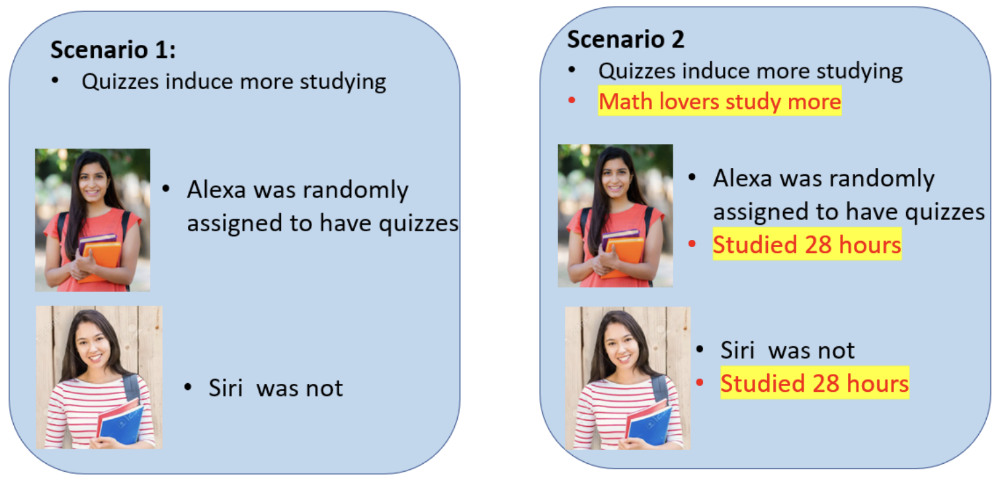

… or is at least a lot hard than we like to think
Disclaimer
This talk is:
Check out the reading list for learning from the real experts.
what mediation analysis looks like to researchers
… what it often turns out to be
Mediation is tempting
What does a (typical) mediation analysis look like?
The model is probably wrong
How not to defend your mediation model
What now?
As researchers, we want to understand mechanisms.
James Lind’s treating scurvy with citrus fruit.
Source: https://www.bbc.com/news/uk-england-37320399
eating lemons → cure scurvy
James Lind’s treating scurvy with citrus fruit.
Source: https://www.bbc.com/news/uk-england-37320399
But how?
James Lind’s treating scurvy with citrus fruit.
Source: https://www.bbc.com/news/uk-england-37320399
eating lemons → absorb vitamine c → cure scurvy
As a researchers, we constantly think about mediation.
“How does X affect Y?” and “Why does X affect Y?” are questions about mediation.
The model is probably wrong
How not to defend your mediation model
What now?
“Do regular tests improve math grades for students?”
We can run an RCT and get the causal effect
Suppose it works
Next, we might want to ask: “Why?”/“How?”
We might have an idea: “It might be because regular tests make students study more”
That’s a mediation question
Step 1 — Total effect of X on Y
\[Y = \alpha + cX\]
Step 2 — Effect of X on mediator M
\[M = \alpha + aX\]
Step 3 — Effect of X on Y, controlling for M
\[Y = \alpha + c'X + bM\]
Mediation = \(c - c'\)
Mediation is tempting
What does a (typical) mediation analysis look like?
The model is probably wrong
How not to defend your mediation model
What now?
Simple mediation model
A more complex model
Now, what happens if we estimate our simple mediation model given reality is the more complex causal mdoel?

\[Y = \alpha + c'X + bM\]
Conditioning on M
creates a spurious negative correlation between X and U within strata of M
c’ underestimated
— OLS sees quiz assignment as a negative predictor of grades once M is held fixed
If this was confusing, here is another way to think about it…
\[Y = \alpha + c'X + bM\]
b overestimated
— \(b\) (M→Y) picks up the effect of U
c’ underestimated
— OLS compensates for the over-prediction of \(b\) by shrinking \(c'\)
Mediation is tempting
What does a (typical) mediation analysis look like?
The model is probably wrong
“Even though I’m estimating a mediation, I never speak of causal effects.”
Mediation always implies causation.
““Effect sizes support my mediation model””
Effect sizes never prove that your model is right.
Mediation is tempting
What does a (typical) mediation analysis look like?
The model is probably wrong
How not to defend your mediation model
To be honest, I don’t know. But actual experts have given this more thought (reading list).
Two potential paths forward:
(more pragmatic) Spell out your assumptions
(more idealistic) Think beyond your individual paper
not everything has to be in one paper.
there has never been (as far as i know), an clinical RCT showing that smoking causes cancer.
correlational evidence piling up, and biological/chemical evidence for fine grained processes have accumulated